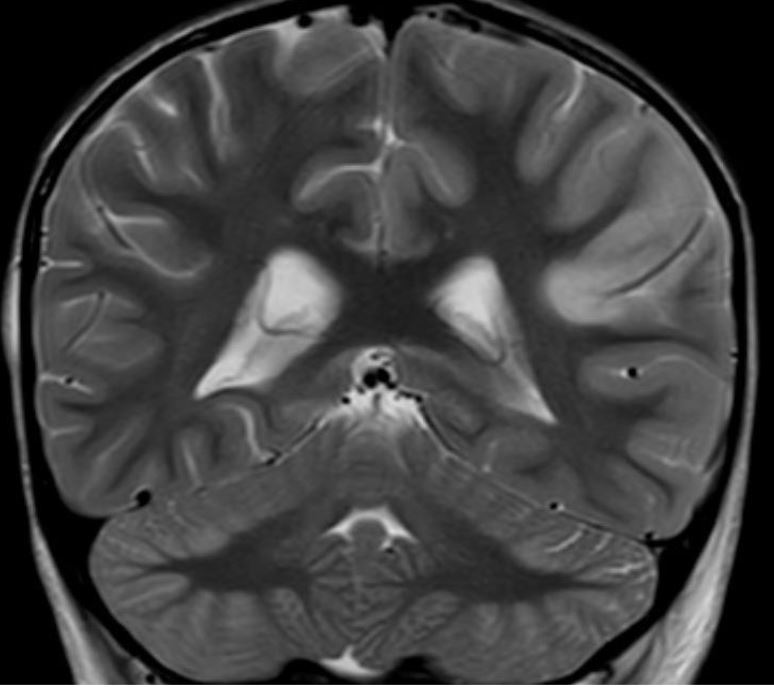

Occipital-Parietal Lesions

- Focal unilateral or bilateral damage to vision-related parietal lobe or its connections to visual cortex
- Unilateral parietal lesion causes hemispatial neglect
- Bilateral parietal lesions cause Balint-Holmes syndrome
- Common causes of unilateral lesions: stroke, tumor, hemorrhage, inflammation
- Common causes of bilateral lesions: systemic hypotension, Alzheimer disease
- Visual acuity preserved
-
Lesion in right parietal lobe
- Homonymous hemianopia primarily affecting right inferior quadrants
- Eyes constantly deviated toward side of lesion (“gaze deviation”) or inconstantly deviated (“gaze preference”) Horizontal Gaze Deviation
- No saccades or pursuit into contralateral gaze, yet oculocephalic maneuver carries eyes into contralateral gaze (“supranuclear gaze disorder”)
- Unable to see objects in contralateral visual hemispace when tested with double simultaneous stimulation (“visual extinction”)
- Unable to perceive contralateral auditory or tactile stimuli when tested with double simultaneous stimulation (“multimodal neglect”)
- Bisection deviated to side of lesion on line bisection task
- Clock hours drawn only in visual space ipsilateral to lesion [ Untitled Neglect
-
Lesion in left parietal lobe
- Homonymous hemianopia primarily affecting left inferior quadrants
- Gaze deviation and hemispatial neglect phenomena much less common than with right parietal lesions
-
Lesions in both parietal lobes
- Inability to identify control plate number on Ishihara Pseudoisochromatic Color Test
- Tentative, groping walk
- Inaccurate reaching for objects (“optic ataxia”)
- Miscounting of object arrays Balint
- Misinterpretation of action pictures (“simultanagnosia”)
- Defective pursuit and saccadic eye movements, yet full versions on oculocephalic maneuver (“acquired ocular motor apraxia”) Acquired Occulotr Apraxia
- Bilateral homonymous hemianopia primarily affecting inferior quadrants


- Developmental cognitive retardation
- Delirium
- Dementia
- Psychogenic unresponsiveness
- Poor cooperation
- Impaired communication
- Lesion in one parietal lobe (hemispatial neglect): look for horizontal gaze deviation with intact oculocephalic maneuver, extinction to double simultaneous visual field, auditory, and tactile stimulation, ipsilateral shift of line bisection and clock-drawing
- Lesion in both parietal lobes (Balint-Holmes syndrome): look for failure to identify color plate on Ishihara color testing, misreaching into visual space, inability to interpret pictures, impaired pursuit and saccades
- Recommend occupational therapy
- Hemispatial neglect and Balint-Holmes Syndrome cause profound impairment of visual attention, which is more debilitating than homonymous hemianopia
- In stroke, deficits may lessen, but…
- In Alzheimer disease, deficits worsen
-
Trap: widely-prescribed rehabilitative measures that stimulate attention offer limited benefit